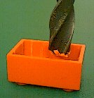
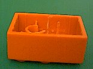
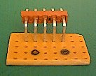
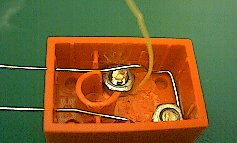
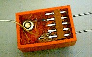
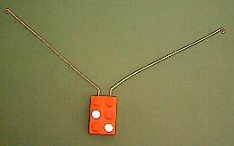

Robbert
Mattijs
van Mattijs, Stef en Robbert Mientki
januari 2001
| Lego-Knex
Robbert Mattijs |
Lego Left-Right Touch Sensor
van Mattijs, Stef en Robbert Mientki januari 2001 |
|
|
|
| Het idee is oorspronkelijk bedacht en gepubliceerd door Dennis Clark,
whisker
bumper, zeer gaaf en goedkoop, wie heeft er nog meer van dat soort
ideeen ?
We hebben het idee verder uitgewerkt en aangepast aan de de Lego steen
en Lego Mindstorms.
|
The original idea was borrowed from Dennis Clark, whisker
bumper, very cool and very cheap, that's what we need more of.
We modified the concept and adapted it to the Lego bricks and Lego Mindstorms.
|
|
|
|
|||||||||||||||||||||||||||||||
| De benodigde materialen:
- 1 "zesje" - 1 "plaatje-zesje" - 2 schroeven en moeren m3, lengte 3 mm - 1 pinheader, 5-pins, haaks - 1 weerstand 47 kOhm - 1 weerstand 100 kOhm - 20 cm verenstaal draad of pianosnaar doorsnede 0.8 mm (je kunt zelfs bowden-kabel=binnenkabel van een fietsrem gebruiken) |
|
The necessairy materials:
- 1 brick 2*3, normal height - 1 brick 2*3, height 1/3 - 2 screws and nuts m3, length 3 mm - 1 PCB pinheader, 5-pins, 90 degrees - 1 resistor 47 kOhm - 1 resistor 100 kOhm - 20 cm spring wire ? (steel wire from which spiral springs are made). You can also use piano wire or bowden cable (inner wire of bicycle brake cable. |
||||||||||||||||||||||||||||||
| Waarom een "zesje" (3*2 steen) ?
A: een "viertje is te klein" C: een "achtje" heeft geen ribben tussen de wand en de buitenste cilinders, die nodig zijn om de draad te fixeren. B: perfect dus |
|
Why a 3*2 brick ?
A: the 2*2 brick is just to small C: the 4*2 brick is missing the ribs between the wall and the outer cylinders, which are needed to fixate the wire. B: just perfect |
||||||||||||||||||||||||||||||
| Verwijder 2 noppen diagonaal, zoals op de foto. (Hier worden straks de schroeven in gemonteerd die dienen als electrische lego-compatibele connector) |
|
Remove the two nibs from the top of the brick as shown on the photo. (This is where the screws will be inserted) | ||||||||||||||||||||||||||||||
| Verwijder de cilinder aan de zijde waar de 2 noppen zijn verwijderd en de bijbehorende ribben. |
|
Remove the cylinder and the ribs on the side where the 2 nibs were removed. | ||||||||||||||||||||||||||||||
| Het bovenste deel van de overblijvende cilinder moet nu worden verwijderd,
zover totdat de hoogte van de cilinder gelijk is aan de hoogte van de ribben.
Dit kan op de volgende manier, pak een grote boor (bv 8 mm) en draai handmatig het bovenste deel weg. Snij nu met een scherp mes het laatste stukje mooi vlak. |
 |
Remove the upper part of the other cylinder so far, till the height
of the cylinder is equal to the height of the ribs.
This can be done by a large drill, just rotating it with your hand. After the largest part is removed, cut the resting parts with a sharp knife. |
||||||||||||||||||||||||||||||
| Steek nu nog een kwart van de cilinder weg (zoals aangegeven op de foto), anders is er onvoldoende ruimte voor de moer. |
|
Cut away one quarter of the cylinder (as shown on the photo), otherwise the nut will not fit. | ||||||||||||||||||||||||||||||
| Boor nu 2 gaten van 3 mm in de kopse kant (zie foto). De gaten komen
op ongeveer halve hoogte (niet kritisch) en op een onderlinge hart-op-hart
afstand van 3*2.54 mm = 7.62 mm, dit moet zo nauwkeurig mogelijk gebeuren.
Als mal voor het boren kan handig gebruik worden gemaakt van een stukje
voorgeboorde printplaat, de gaatjes zitten hier precies op een onderlinge
afstand van 2.54 mm.
Er moeten tevens 2 inkepingen in de ribben worden gemaakt, net naast de cilinder, waar straks de voeldraad in wordt gefixeerd. De diepte is niet zo kritisch want de draden worden toch gelijmd. |
 |
Drill 2 holes of 3 mm in the short side of the brick (see picture).
The holes are placed at about half height (not critical) and the spacing
between the holes should be exactly 3*2.54 mm = 7.62 mm. You can use a
small piece of pre-drilled printed cirquit board as a template (the distance
between the holes is exactly 2.54 mm.
You have to make a cut into the ribs, just besides the cylinder (see photo), this is to fasten the sensor wires. The depht of the cuts is not very important, becuase the wires will be glued. |
||||||||||||||||||||||||||||||
| Buig de voeldraad in een U-vorm, zodat deze precies in past binnen
de lego-steen.
Buig nu het einde van de U zoals op de foto, zodat de volesprieten op ongeveer halve hoogte komen als de U op de bodem van de steen ligt. |
|
Bend the sense wire in a U-shape, so that it fits firmly in the brick.
Bend the end of the U-shape as shown on the picture, to get the sense wires at half height when the U-shape is on the bottom of the brick. |
||||||||||||||||||||||||||||||
| Nu minstens 1 schroef op lengte maken (3 mm). De schroef in hoek mag
langer zijn.
De koppen van de schroeven precies op de juiste maat vijlen (zie connector), let daarbij zowel op de diameter als op de hoogte. Van de moer die in de hoek komt, moet 1 schuine punt worden afgevijld, zoals getoond op de foto. |
|
Make at least 1 screw at the right length (3 mm). The screw in the
corner may be left u litle bit longer. Polish the head of the screws until
they match the lego nibs exactly (see connector).
From 1 nut jou hef 2 cut off 1corner,otherwise it wil not fit in the corner of the brick (see picture). |
||||||||||||||||||||||||||||||
| Monteer eerst de middelste schroef, monteer hier meteen een korte electrische
draad mee.
Met de schroef in de hoek wordt de voeldraad vastgezet, zodoende de mechanische en elektrische bevestiging gecombineerd. |
 | First mount the inner screw together with a small electrical wire.
With the corner srew the sense wire is fixed and the eklectrical connection is made. |
||||||||||||||||||||||||||||||
| Hier is te zien, dat ook ik het schroefje te lang had, je kunt hier echter de draad nog vrij goed corrigeren. |
|
Here I had to correct the sense wire, because it was touching the inner screw. | ||||||||||||||||||||||||||||||
| Lijm de pinheader vast, probeer deze zo goed mogelijk te positioneren. |
 |
Fix the pinheader by glueing it to the brick. | ||||||||||||||||||||||||||||||
| En nu maar wachten tot de lijm droog is (ik had de verkeerde lijm gebruikt). |
 |
Now wait till the glue has hardened (I used the wrong glue). | ||||||||||||||||||||||||||||||
| Monteer de weerstanden, zoals getoond op de foto. |
|
Mount the resistors as shown in the picture. | ||||||||||||||||||||||||||||||
| Buig de voelsprieten in de gewenste vorm.
Buig het eind van om tot een oogje, want het draad is erg scherp. |
 |
Bend the sense wire in the shape you like. Make a loop at the end of the sense wire because it's very sharp. | ||||||||||||||||||||||||||||||
| BELANGRIJK:
Nu alles vastzit en de kap erop gelijmd gaat worden, is dit de laatste kans om de gevoeligheid van de sensor in te stellen. De voelsprieten kunnen weliswaar niet meer verbogen worden (men kan er gewoonweg niet bij) maar de pinheader pennen kunnen nog enigzins worden bijgebogen. Sluit de sensor aan op de RCX en uitproberen maar. Als men tevreden is over het resultaat, is het verstandig de helft waarin de weerstanden zich bevinden geheel te vullen met lijm, zodat alles goed gefixeerd blijft. Door bijvoorbeeld lucifers naast de kontakten te lijmen kan een nog stabielere opstelling worden verkregen. |
|
IMPORTANT:
Before glueing the lid on it, this is the last chance to corrrect the sensitivity of the sensor. Although it's not possible to bend the sense wire, you still can adjust the pinheader pins a little bit. Connect the sensor to the RCX and correct till you're satisfied. You can now fill the compartiment with the resistors with glue if you like, it increase the stability of the sensor. You can even glue matches just besides the contacts to get an even more stable switch. |
||||||||||||||||||||||||||||||
| De deksel passend maken en vastlijmen. |
|
Adjust the lid and glue it together. | ||||||||||||||||||||||||||||||
| Weerstand Rechts = 47 kOhm
Weerstand Links = 100 kOhm
RAW = theoretisch = gemeten % = gemeten Deze sensor kan ook direct worden gebruikt in de RCX command center, door hem te programmeren als licht-sensor, hij geeft dan dezelfde waarden als de %-kolom. |
 |
Resistor Right = 47 kOhm
Resistor Left = 100 kOhm
RAW = theoretical = measured % = measured This sensor can be used directly from the RCX command center, by programming it as a light sensor, giving the same values as in the %-column. |
||||||||||||||||||||||||||||||
|
|
||||||||||||||||||||||||||||||||